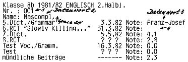
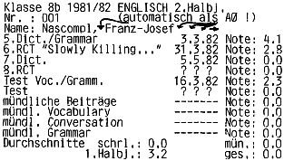
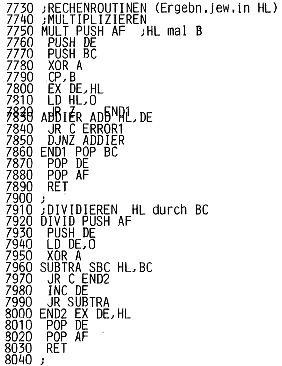

Nascom Journal |
Mai 1982 · Ausgabe 5 |
formatierte Files Space als A0 interpretiert. (So werden zwar Name und Vorname vom Drucker getrennt, vom Programm aber als ein Datenwort aufgefaßt).

Als Zwischenraum wurde #20 eingegeben. Nachname und nachfolgende Spaces werden nun jeweils als selbständige Datenwörter interpretiert.

Zwischenräume und freier Platz nach dem Namen sind als #A0 eingegeben. Sie werden zusammen als ein Datenwort aufgefaßt.
Nach Betätigung der ESCAPE Taste fragt der Rechner „Number of Files“. Nun gibt man (max. vierstellig) die benötigte Anzahl ein. Falsche Eingabe (Buchstaben) wird durch „Wrong Input“ quittiert. Reicht der Speicherplatz für die benötigte Anzahl von Files, so erscheint in der Titelzeile „All Files Loaded“, andernfalls „Number of Files too high“.
Nach dem Laden der Files in den Speicher kehrt das Programm zum „Masken Menü“ zurück. Das Drücken einer beliebigen Taste läßt zum Start des Dateiprogramms springen. Dort können die Files in gewohnter Weise (wie in Teil 1 besprochen)verarbeitet werden. Durch Drücken von „2“ werden die Files in der Maske angezeigt, Man muß sie durch „File Number anwählen. (Das hat sich im Falle der Schülerkartei als vorteilhaft erwiesen). Will man Maskierte Files durch Stichwörter aufsuchen, muß man den Umweg über das normale Suchprogramm machen. Hier wären Ihre Erfahrungen mit speziellen Anwendungen interessant, ob man nicht vielleicht auch eine gesonderte Suche für Maskenfiles einbauen sollte. Vor der Ausgabe kann Printer oder Screen gewählt werden, der jeweilige Modus wird in der Titelzeile angezeigt.
Durch „3“ wird die Eingabe angewählt. Sie fragt nach „Word Number“. Mit einer bis zu vierstelligen Zahl können Sie nun bestimmen, welches Datenwort Sie eingeben oder ändern wollen. (In unserem Beispiel wäre die Nummer 7 der Test vom 16.3.82). Nach der Wortnummer wird die Filenummer eingegeben. Daraufhin erscheint das File in der Maske auf dem Schirm, und der Cursor blinkt an der entsprechenden Stelle. Wird bei der Eingabe die vorgesehene Länge des Wortes überschritten, so springt der Cursor immer wieder auf die erste Stelle; es kann also nie ein falsches Wort überschrieben werden. Die auf dem Schirm sichtbare Eingabe wird durch New Line im File abgespeichert. Durch ESCAPE springt man ins Menü zurück, ansonsten kann die nächste Filenummer eingegeben werden.
Für Leser, die den Assembler nicht im Rundlauf erhalten haben, folgt hier das vollständige Hexlisting. Gestartet wird bei #151A.
Ich würde mich über Erfahrungsberichte, Verbesserungsvorschläge und mögliche Erweiterungen freuen.

| Seite 25 von 32 |
|---|